Unidad 6. Administración de instituciones
Unidad 6. Administración de instituciones
Introducción
Las instituciones desempeñan un papel fundamental en el desarrollo de la sociedad, ya que permiten satisfacer necesidades educativas, económicas, sociales, culturales y de salud.
Para cumplir sus objetivos, requieren una administración que coordine adecuadamente sus recursos humanos, materiales, financieros y tecnológicos.
Sin embargo, las instituciones también enfrentan desafíos relacionados con los avances tecnológicos, las nuevas necesidades de la sociedad y los cambios en su entorno. Por ello, deben desarrollar la capacidad de adaptarse, innovar y mejorar continuamente sus procesos.
En esta unidad estudiaremos los elementos que conforman una institución, sus diferentes tipos, la mecánica y dinámica administrativa, así como la importancia de la innovación y el manejo del cambio en las organizaciones públicas y privadas.
Objetivo de la unidad
Comprender los principios y procesos de la administración de instituciones, identificando sus elementos, características y tipos, así como la importancia del cambio planeado, la innovación y las estrategias para reducir la resistencia al cambio, con el propósito de analizar su aplicación en organizaciones públicas y privadas.
¿Qué aprenderá el alumno?
¿Qué aprenderá el alumno?
Al finalizar esta unidad, el alumno será capaz de:
- Identificar los elementos que conforman una institución y su importancia para el funcionamiento organizacional.
- Distinguir los diferentes tipos de instituciones de acuerdo con sus características y finalidades.
- Comprender la mecánica y dinámica de la administración y su aplicación en las instituciones.
- Diferenciar los conceptos de cambio e innovación dentro de las organizaciones.
Reconocer la importancia de la innovación para mejorar procesos, servicios y resultados. - Explicar las etapas necesarias para implementar un cambio planeado.
Identificar las causas de la resistencia al cambio y las técnicas para reducirla. - Comparar las características de la administración pública y privada mediante ejemplos prácticos.
Temario - Unidad 6 Administración de instituciones
Temario de la Unidad 6 Administración de instituciones
6.1 Elementos que conforman una institución
6.2 Tipos de instituciones
6.3 Mecánica y dinámica de la administración de instituciones
6.4 Cambio e innovación
6.5 Innovación en las organizaciones
6.6 Manejo del cambio planeado
6.7 Técnicas para reducir la resistencia al cambio
6.8 Administración pública y privada
Importancia de la unidad
El estudio de la administración de instituciones permitirá al alumno comprender que las organizaciones necesitan algo más que recursos y una estructura definida: también requieren capacidad de adaptación, innovación y mejora continua.
Estos conocimientos le ayudarán a analizar situaciones administrativas reales, comprender los desafíos que enfrentan las instituciones y reconocer alternativas para mejorar su funcionamiento.
Al concluir la unidad, el alumno podrá relacionar los principios administrativos con el funcionamiento de diferentes instituciones y comprender cómo la innovación y la gestión del cambio contribuyen al cumplimiento de sus objetivos.
6.2. Tipos de instituciones
6.2. Tipos de instituciones
¿Qué son los tipos de instituciones?
Las instituciones pueden clasificarse de acuerdo con su finalidad, las actividades que realizan, su forma de financiamiento y el sector al que pertenecen.
Cada tipo de institución cumple una función específica dentro de la sociedad y necesita una administración adecuada para alcanzar sus objetivos.
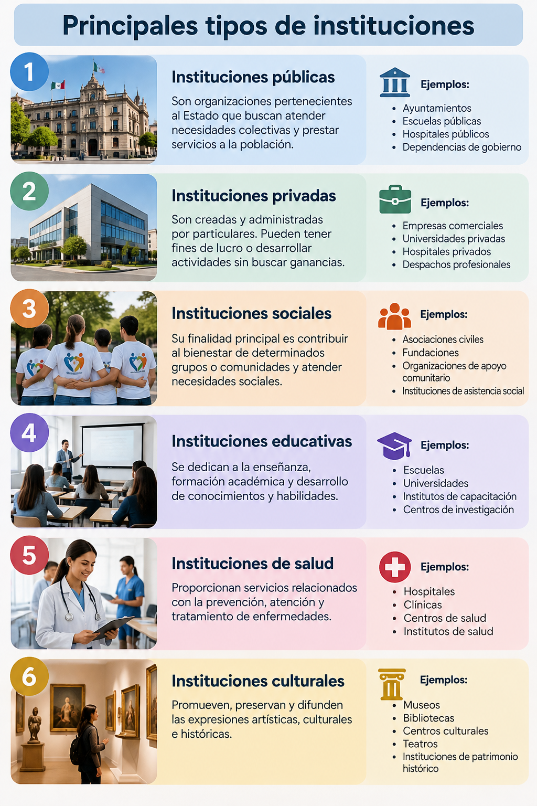
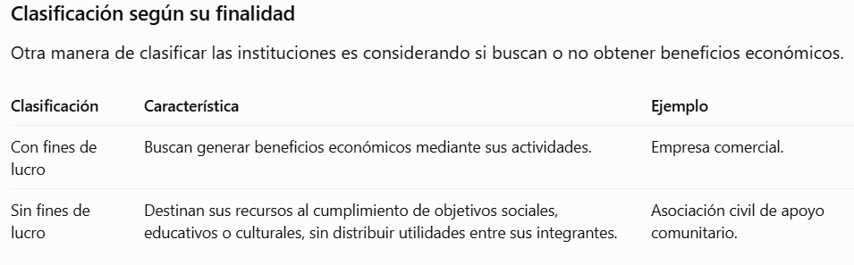
Ejemplo práctico: dos instituciones educativas
Imaginemos dos universidades: una pública y otra privada.
Ambas tienen como propósito ofrecer educación y formar profesionistas, pero pueden diferenciarse en su financiamiento y administración.
Universidad pública: Recibe principalmente recursos públicos y se rige por las disposiciones correspondientes a su naturaleza jurídica.
Universidad privada: Se financia principalmente mediante colegiaturas y otros ingresos particulares, y debe cumplir con las disposiciones educativas aplicables.
A pesar de sus diferencias, ambas necesitan docentes, instalaciones, personal administrativo, recursos tecnológicos y procesos de evaluación.
¿Por qué es importante conocer los tipos de instituciones?
Esta clasificación permite comprender que no todas las organizaciones tienen los mismos objetivos, recursos o responsabilidades.
También ayuda a identificar cómo debe adaptarse la administración según las necesidades de cada institución.
Por ejemplo, administrar un hospital requiere considerar aspectos distintos a los de una empresa comercial, aunque ambos utilicen la planeación, organización, dirección y control.
Las instituciones se diferencian por su finalidad, actividades, financiamiento y naturaleza jurídica, pero todas necesitan administrar adecuadamente sus recursos para cumplir sus objetivos.
¿Qué diferencias consideras que existen entre administrar una universidad pública y una universidad privada? Menciona dos aspectos que podrían influir en sus decisiones administrativas.
6.3 Mecánica y dinámica de la administración de instituciones
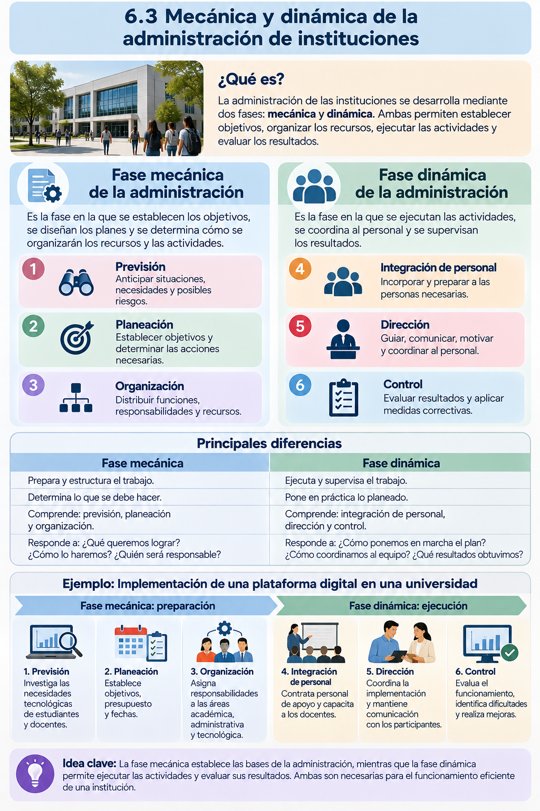
6.4. Cambio e innovación
6.4. Cambio e innovación
¿Qué son el cambio y la innovación?
Las instituciones se encuentran en constante transformación debido a los avances tecnológicos, las nuevas necesidades de la sociedad, la competencia y las modificaciones en su entorno.
Para mantenerse vigentes y mejorar su funcionamiento, necesitan adaptarse y buscar nuevas formas de realizar sus actividades.
Aunque los conceptos de cambio e innovación están relacionados, no significan exactamente lo mismo.
- Cambio: Es la modificación de una situación, estructura, proceso o forma de trabajo dentro de una organización.
- Innovación: Es la implementación de una idea, método, producto o proceso nuevo o significativamente mejorado que genera valor para la organización o sus usuarios.
En términos sencillos: cambiar significa hacer algo diferente; innovar significa introducir una novedad o mejora significativa que aporte valor.
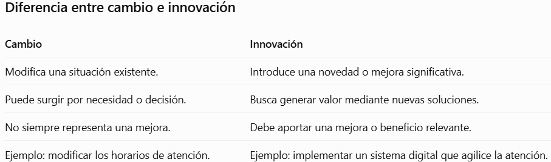
¿Por qué cambian las instituciones?
Existen diferentes factores que impulsan a las organizaciones a modificar sus actividades.
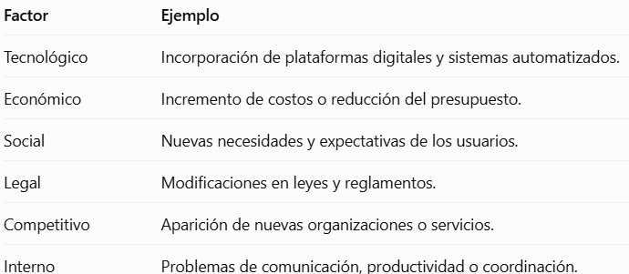
Tipos de cambio organizacional
1. Cambio estructural: Modifica departamentos, puestos, jerarquías o responsabilidades.
Ejemplo: Una universidad crea un departamento de educación digital.
2. Cambio tecnológico: Incorpora o sustituye herramientas, equipos y sistemas.
Ejemplo: Un hospital implementa expedientes clínicos electrónicos.
3. Cambio en los procesos: Modifica la manera de realizar las actividades.
Ejemplo: Una institución reduce los pasos necesarios para realizar un trámite.
4. Cambio en las personas: Busca desarrollar nuevas habilidades, conocimientos, actitudes o formas de trabajo.
Ejemplo: Capacitar a los trabajadores para utilizar una plataforma administrativa.
Ejemplo práctico: una universidad que moderniza sus servicios
Imaginemos que una universidad realiza todas las inscripciones de manera presencial, mediante documentos impresos.
Debido al aumento de estudiantes, se presentan largas filas y retrasos en la atención.
La institución decide implementar un sistema de inscripción en línea.
En este caso:
- El cambio consiste en modificar el procedimiento de inscripción.
- La innovación consiste en implementar una solución digital que mejora significativamente el servicio.
Para que funcione, la universidad necesita capacitar al personal, informar a los estudiantes y evaluar los resultados.
Beneficios del cambio y la innovación
Cuando se gestionan adecuadamente, pueden contribuir a:
- Mejorar la calidad de los servicios.
- Reducir tiempos y costos operativos.
- Aprovechar mejor los recursos.
- Incrementar la satisfacción de los usuarios.
- Facilitar la adaptación a nuevas necesidades.
- Fortalecer la capacidad de respuesta de la institución.
Sin embargo, también pueden generar dificultades, como costos iniciales, necesidad de capacitación o resistencia por parte de los trabajadores.
¿Por qué algunas personas se resisten al cambio?
Cuando una institución modifica sus procedimientos, algunas personas pueden experimentar incertidumbre o preocupación.
Entre las causas más frecuentes se encuentran el desconocimiento de los beneficios, el temor a perder el empleo, la falta de capacitación y la costumbre de trabajar de una manera determinada.
Por esta razón, la comunicación y la participación del personal son fundamentales para facilitar la adaptación.
El cambio permite que las instituciones se adapten a nuevas circunstancias, mientras que la innovación introduce soluciones que generan valor y mejoran su funcionamiento.
Una universidad decide sustituir los exámenes impresos por evaluaciones digitales.
¿Consideras que esta decisión representa un cambio, una innovación o ambos? Explica tu respuesta e identifica un beneficio y una posible dificultad para los estudiantes y docentes.
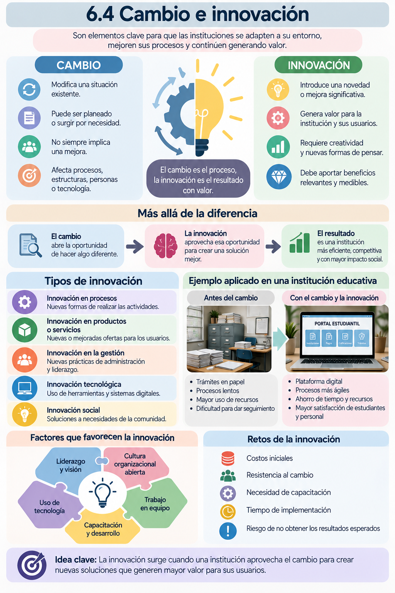
6.5. Innovación en las organizaciones
6.5. Innovación en las organizaciones
¿Qué es la innovación organizacional?
La innovación organizacional consiste en implementar nuevas ideas, métodos, tecnologías o formas de trabajo que permitan mejorar el funcionamiento de una institución y generar beneficios para sus trabajadores, usuarios y la sociedad.
Innovar no significa necesariamente inventar algo que nunca haya existido. También puede consistir en adaptar una solución existente para resolver un problema de manera más eficiente.
Por ejemplo, una universidad puede innovar al incorporar un sistema de seguimiento académico que permita identificar oportunamente a los estudiantes que necesitan apoyo.
¿Por qué es importante innovar?
La innovación ayuda a las organizaciones a responder a las nuevas necesidades de su entorno y a mejorar la calidad de sus servicios.
Entre sus principales beneficios se encuentran:
- Optimizar los procesos administrativos.
- Reducir tiempos de atención y costos operativos.
- Mejorar la experiencia de los usuarios.
- Facilitar el trabajo del personal.
- Aprovechar las herramientas tecnológicas.
- Desarrollar soluciones a problemas existentes.
- Fortalecer la competitividad y la capacidad de adaptación.
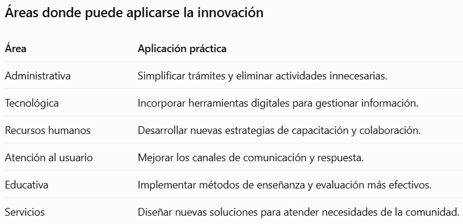
¿Cómo surge una innovación dentro de una organización?
Generalmente, la innovación comienza cuando se identifica un problema o una oportunidad de mejora.
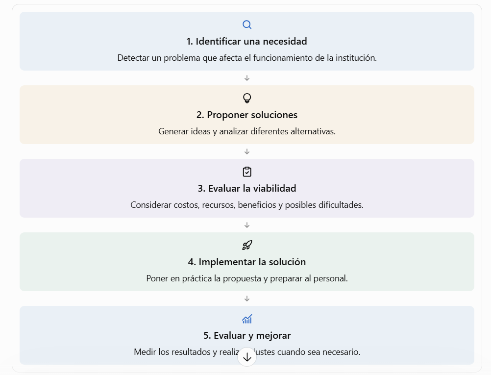
Ejemplo práctico: innovación en una institución educativa
Una universidad observa que algunos estudiantes presentan dificultades académicas, pero los docentes y coordinadores detectan estos problemas cuando el periodo escolar está por finalizar.
Para mejorar esta situación, la institución propone implementar un sistema de seguimiento académico preventivo.
¿Cómo funcionaría?
- Los docentes registrarían periódicamente las calificaciones y la asistencia.
- El sistema permitiría identificar estudiantes con bajo rendimiento o ausencias frecuentes.
- Los coordinadores recibirían alertas para brindar orientación académica.
- Los estudiantes podrían recibir apoyo antes de que sus dificultades aumenten.
- La institución evaluaría si disminuyen los índices de reprobación.
¿Dónde está la innovación?
No consiste únicamente en utilizar tecnología, sino en cambiar la forma de atender un problema: pasar de intervenir cuando el estudiante ya presenta dificultades graves a ofrecer apoyo oportuno.
La innovación genera valor cuando contribuye a mejorar los resultados educativos.
¿Qué necesita una organización para innovar?
Para desarrollar propuestas innovadoras, es importante contar con condiciones que favorezcan la participación y la mejora continua.
Liderazgo abierto: Directivos dispuestos a escuchar propuestas y considerar nuevas soluciones.
Participación del personal: Trabajadores que puedan compartir ideas y señalar oportunidades de mejora.
Capacitación: Desarrollo de habilidades para utilizar nuevas herramientas y procedimientos.
Recursos disponibles: Tiempo, presupuesto y materiales adecuados para implementar las propuestas.
Evaluación: Indicadores que permitan conocer si la innovación produjo los beneficios esperados.
¿Cómo saber si una innovación funciona?
Una innovación debe evaluarse mediante resultados observables.
Por ejemplo, si una institución implementa un sistema digital de atención, puede utilizar los siguientes indicadores:
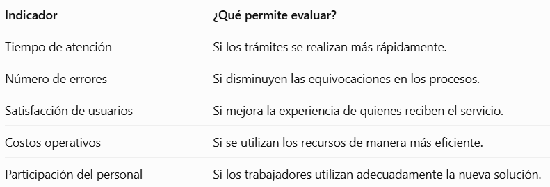
Una propuesta novedosa no necesariamente es exitosa. Para considerarla efectiva, debe demostrar que aporta valor y responde a una necesidad real.
La innovación organizacional transforma las ideas en mejoras aplicables que permiten resolver problemas, optimizar recursos y ofrecer mejores servicios.
Imagina que eres responsable de una institución educativa y observas que los estudiantes realizan largas filas para solicitar documentos escolares.
¿Qué propuesta innovadora implementarías para mejorar este servicio y cómo comprobarías que realmente funciona?
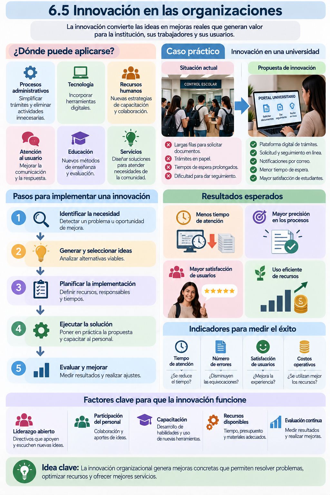
6.6. Manejo del cambio planeado
6.6. Manejo del cambio planeado
¿Qué es el cambio planeado?
El cambio planeado es un proceso organizado mediante el cual una institución modifica sus procedimientos, estructuras, tecnologías o formas de trabajo para mejorar su funcionamiento y alcanzar determinados objetivos.
A diferencia de los cambios improvisados, el cambio planeado se realiza mediante un análisis previo, la definición de acciones y la evaluación de resultados.
En términos sencillos: consiste en preparar, implementar y supervisar una transformación dentro de una institución, procurando reducir los riesgos y facilitar la adaptación de las personas.
¿Por qué es importante el cambio planeado?
Permite que las instituciones realicen transformaciones de manera ordenada, evitando afectar innecesariamente sus actividades.
Entre sus principales beneficios se encuentran:
- Reducir la incertidumbre durante los cambios.
- Establecer objetivos y responsabilidades claras.
- Preparar al personal para nuevas formas de trabajo.
- Aprovechar adecuadamente los recursos.
- Disminuir errores durante la implementación.
- Evaluar los resultados y realizar ajustes oportunos.
Etapas del cambio planeado
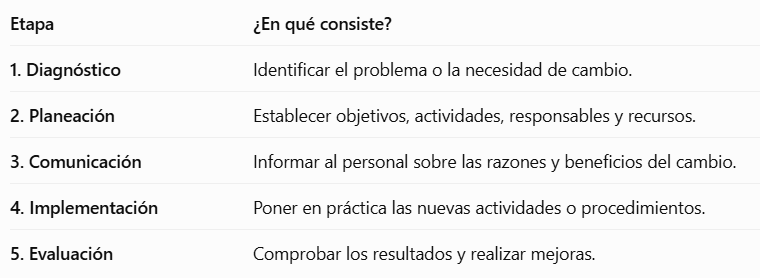
Estas etapas permiten que la institución tenga mayor control sobre el proceso de transformación.
El modelo de cambio de Kurt Lewin
Uno de los modelos más conocidos para comprender el cambio organizacional fue propuesto por el psicólogo Kurt Lewin.
Su modelo explica el cambio mediante tres fases.
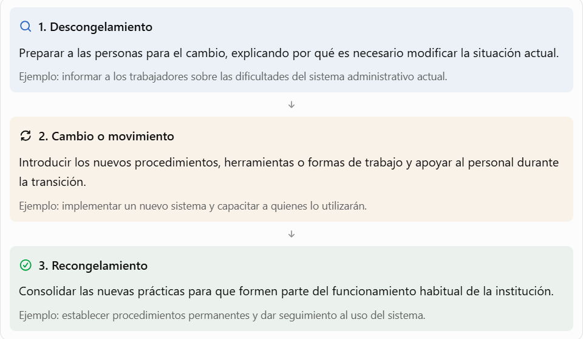
Este modelo permite comprender que el cambio no termina cuando se implementa una nueva herramienta; también es necesario lograr que las personas adopten y mantengan las nuevas prácticas.
Ejemplo práctico: cambio planeado en una institución educativa
Una universidad detecta que el registro manual de asistencia de los estudiantes ocasiona errores y dificulta la elaboración de reportes.
La dirección decide implementar un sistema digital de asistencia.
¿Cómo se desarrolla el cambio?
1. Diagnóstico: Se identifican los problemas del registro manual y las necesidades de docentes y personal administrativo.
2. Planeación: Se selecciona una plataforma, se establece un presupuesto y se define un calendario de implementación.
3. Comunicación: Se informa a los docentes sobre el propósito del sistema y los beneficios esperados.
4. Implementación: Se capacita al personal y se comienza a utilizar el registro digital.
5. Evaluación: Se revisa si disminuyeron los errores y si los reportes se generan con mayor rapidez.
¿Qué podría suceder si no se planea correctamente?
La universidad podría enfrentar dificultades como docentes que desconocen el funcionamiento del sistema, problemas técnicos, registros incompletos o inconformidad del personal.
Por ello, la capacitación, la comunicación y el seguimiento son esenciales.
Factores que favorecen el éxito del cambio planeado
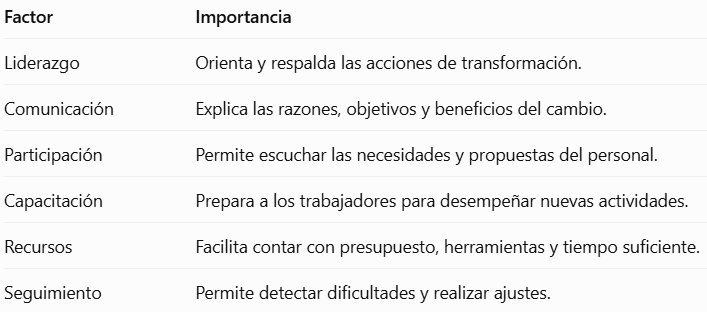
¿Cómo saber si el cambio fue exitoso?
Una institución puede evaluar los resultados mediante indicadores como:
- Reducción del tiempo necesario para realizar una actividad.
- Disminución de errores en los procedimientos.
- Nivel de participación y adaptación del personal.
- Satisfacción de los usuarios.
- Cumplimiento de los objetivos establecidos.
Por ejemplo, si anteriormente elaborar un reporte de asistencia requería tres horas y después del cambio solo necesita treinta minutos, existe una mejora medible en el tiempo de elaboración.
Sin embargo, también es importante comprobar que la información sea correcta y que el personal utilice adecuadamente el nuevo sistema.
El cambio planeado permite transformar una institución mediante acciones organizadas, considerando tanto los recursos y procedimientos como la preparación y participación de las personas.
Una universidad decide implementar una nueva plataforma educativa, pero algunos docentes continúan utilizando únicamente sus métodos anteriores porque no recibieron capacitación suficiente.
¿Qué etapa del cambio planeado necesita reforzar la institución y qué acciones propondrías para facilitar la adaptación de los docentes?
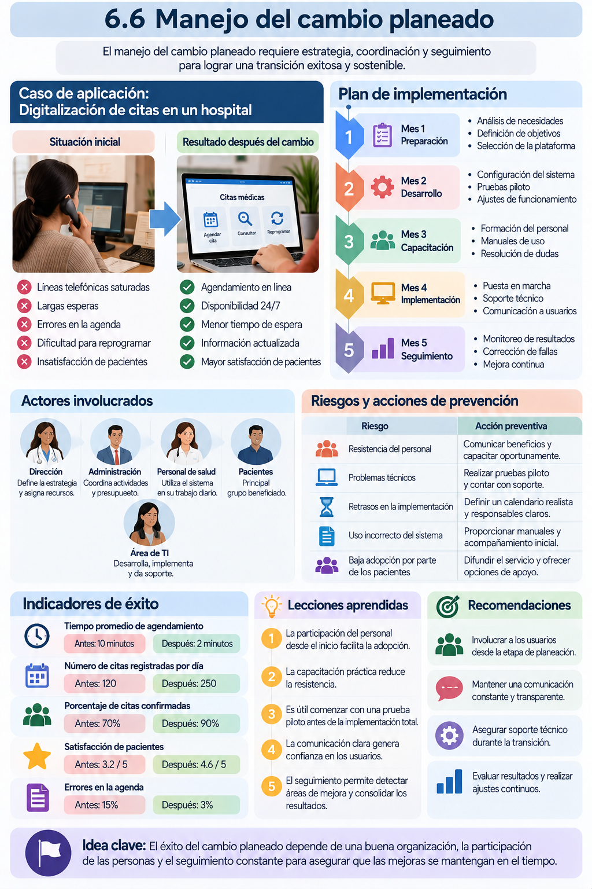